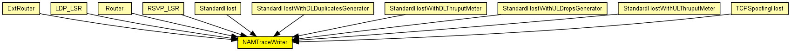

When placed inside a host or router, it writes a NAM trace, based on notifications it receives via the NotificationBoard. It expects to find a NAMTrace module named "nam" at network level. If the "nam" module is missing, this module does not do anything and has no runtime overhead.
This module has no gates and does not process messages.
See also: NAMTrace, NotificationBoard
The following diagram shows usage relationships between types. Unresolved types are missing from the diagram. Click here to see the full picture.
The following diagram shows inheritance relationships for this type. Unresolved types are missing from the diagram. Click here to see the full picture.
If a module type shows up more than once, that means it has been defined in more than one NED file.
| ExtRouter (compound module) |
External router. |
| LDP_LSR (compound module) |
An LDP-capable router. |
| Router (compound module) |
IP router. |
| RSVP_LSR (compound module) |
An RSVP-TE capable router. |
| StandardHost (compound module) | |
| StandardHostWithDLDuplicatesGenerator (compound module) |
IP host with TCP, UDP, SCTP layers and applications AND PPPInterfaceWithDLDuplicatesGenerator. |
| StandardHostWithDLThruputMeter (compound module) |
IP host with TCP, UDP, SCTP layers and applications AND PPPInterfaceWithDLThruputMeter. |
| StandardHostWithULDropsGenerator (compound module) |
IP host with TCP, UDP, SCTP layers and applications AND PPPInterfaceWithULDropsGenerator. |
| StandardHostWithULThruputMeter (compound module) |
IP host with TCP, UDP, SCTP layers and applications AND PPPInterfaceWithULThruputMeter. |
| TCPSpoofingHost (compound module) |
IP host with TCPSpoof in the application layer. |
| Name | Type | Default value | Description |
|---|---|---|---|
| namid | int | -1 | -1 means auto |
| Name | Value | Description |
|---|---|---|
| display | i=block/sink |
// // When placed inside a host or router, it writes a NAM trace, based on // notifications it receives via the NotificationBoard. It expects to find // a NAMTrace module named "nam" at network level. If the "nam" module // is missing, this module does not do anything and has no runtime // overhead. // // This module has no gates and does not process messages. // // @see NAMTrace, NotificationBoard // simple NAMTraceWriter { parameters: int namid = default(-1); // -1 means auto @display("i=block/sink"); }